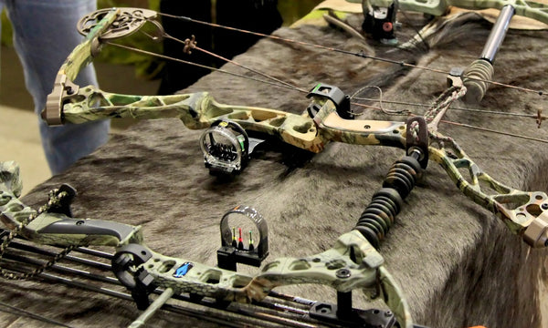
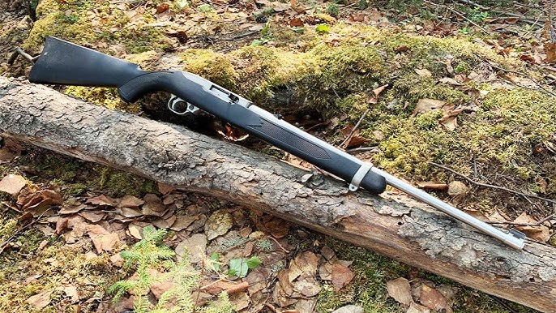
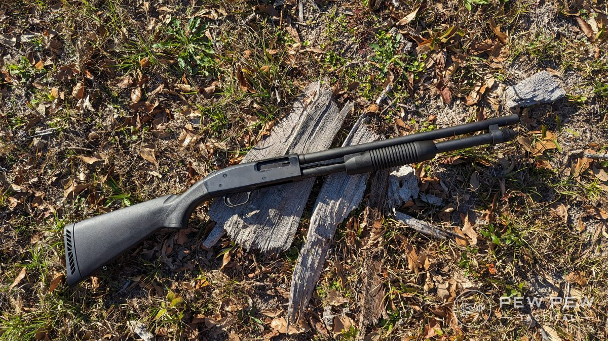
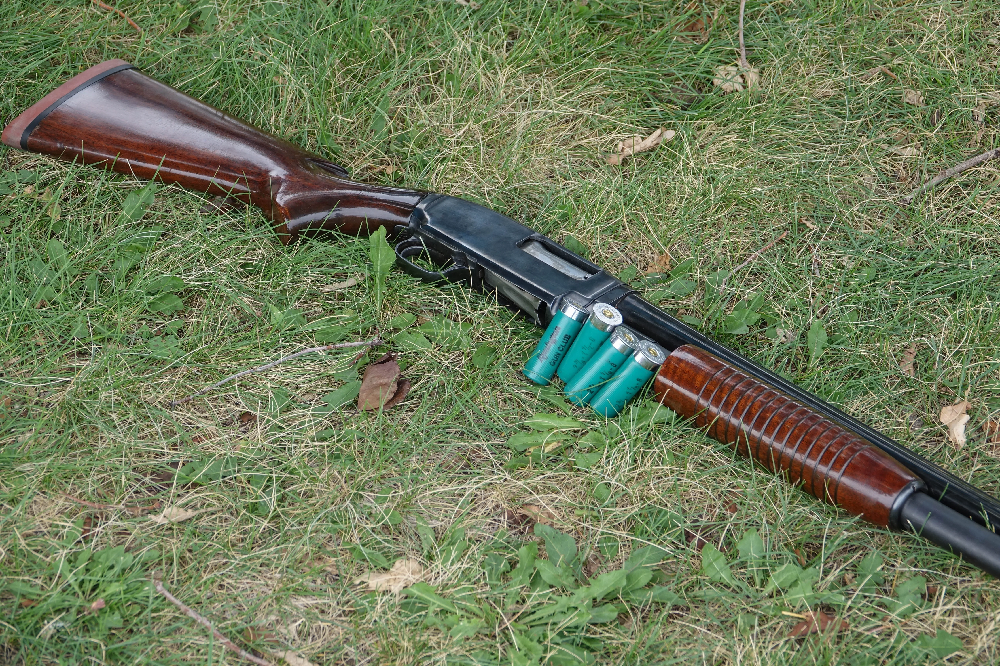
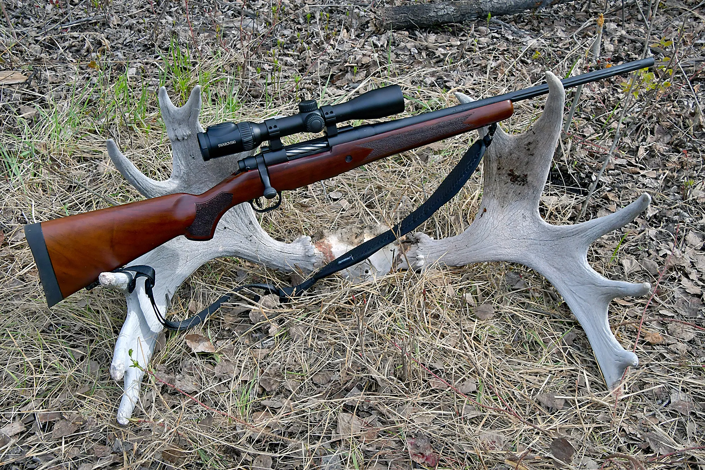
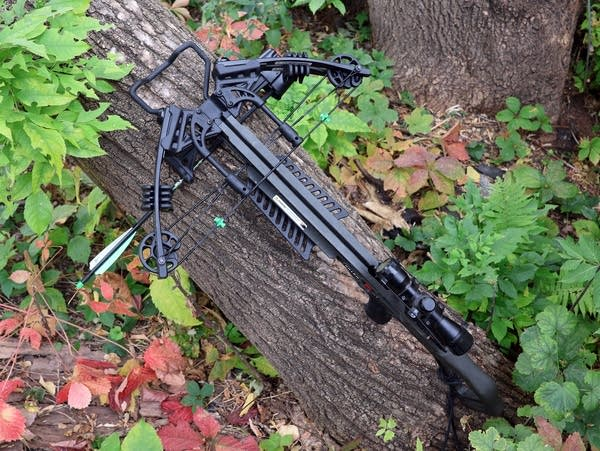

Recommended Hunting Weapons
Beginner-Friendly Weapons
1. Compound Bow
- Used For: Deer, Wild Turkey
- Lightweight, quiet, and good for learning shot placement

2. .22 Caliber Rifle
- Used For: Small Game (Rabbits, Squirrels)
- Low recoil and affordable ammo — perfect for practicing marksmanship

3. 20 Gauge Shotgun
- Used For: Upland Birds, Small Game
- Lighter than a 12 gauge and easier for new hunters to handle

Experienced Hunter Weapons
1. 12 Gauge Shotgun
- Used For: Waterfowl, Turkey, Deer (with slugs)
- Powerful and versatile for many game types

2. .308 Winchester Rifle
- Used For: Deer, Elk, Bear
- Great long-range accuracy and stopping power

3. Crossbow
- Used For: Deer, Turkey
- Requires strength and precision — ideal for stealthy, experienced hunters

← Back to Home